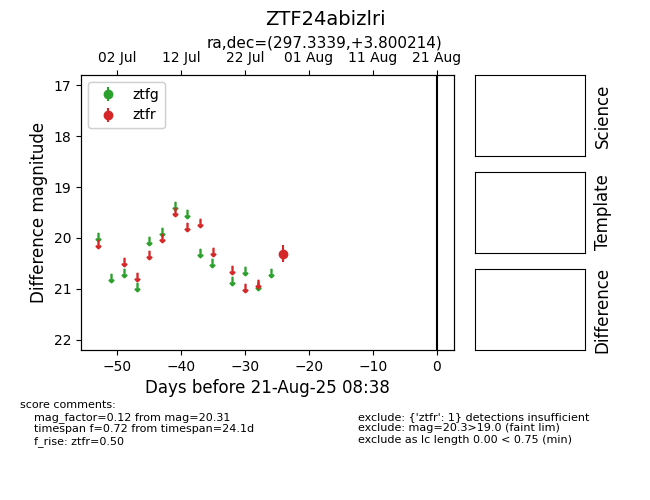

Target ZTF24abizlri at 2025-08-21 08:38, see:
FINK: fink-portal.org/ZTF24abizlri
Lasair: lasair-ztf.lsst.ac.uk/objects/ZTF24abizlri
ALeRCE: alerce.online/object/ZTF24abizlri
alt names
ZTF24abizlri (ztf,alerce)
coordinates:
equatorial (ra, dec) = (297.3339,+3.80021)
galactic (l, b) = (43.0672,-11.05435)
photometry
last ztfr=20.31
1 ztfr detections
